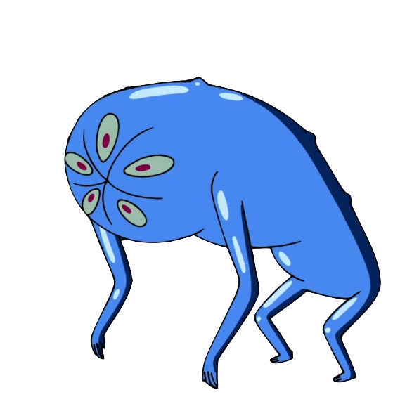
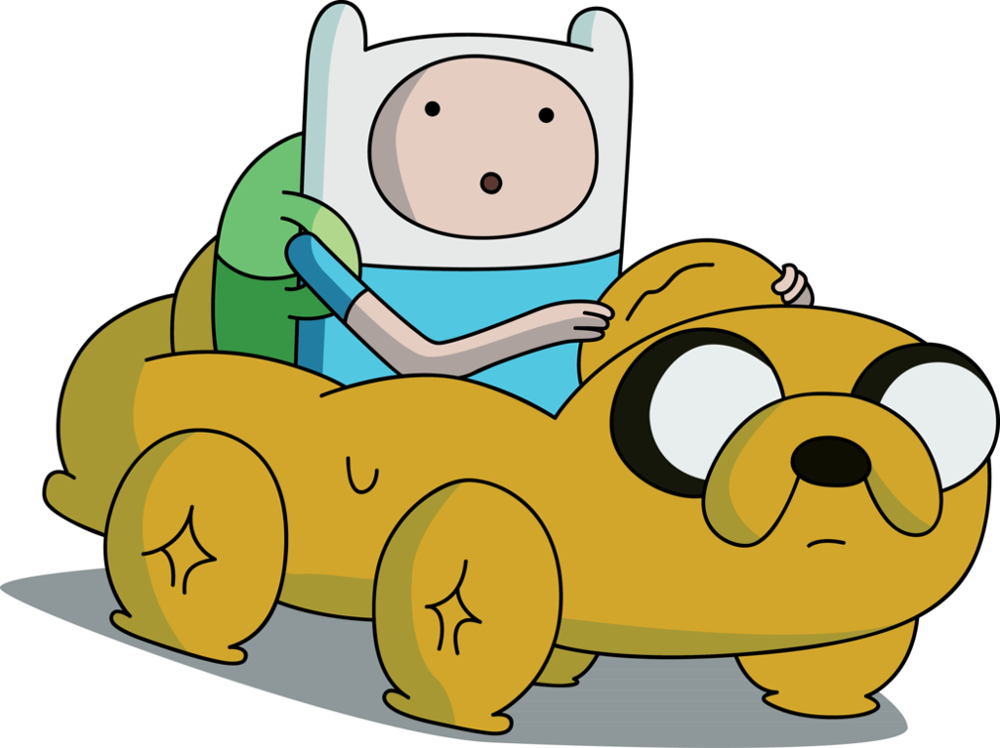
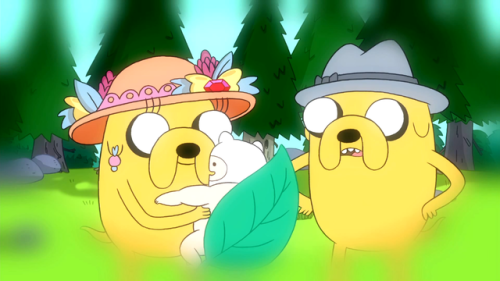
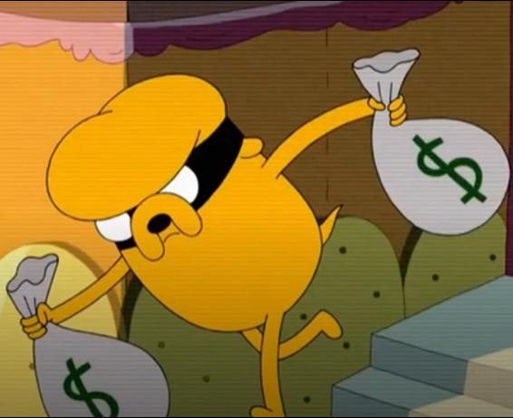

O nascimento de Jake ocorre após seus pais, Joshua e Margaret,
saírem em uma missão de investigação
paranormal na casa da Dona Tromba. Chegando lá, Joshua é atacado pela criatura,
causando um ferimento na sua cabeça.
Ao mesmo tempo que Joshua é atacado, Jake nasce da cabeça de Joshua,
ao mesmo tempo que seu irmão, Jermaine, nasce de Margaret.


Jake herda os poderes mágicos do monstro que atacou seu pai,
podendo se esticar devido a poderes elásticos. Entretanto, por não ter
consciência sobre a existência de seus poderes por muito tempo, Jake
achava que seus poderes se originaram após nadar em uma poça de lama
mágica, em sua infância.
Jake ganha seu irmão adotivo Finn quando ainda era filhote.
Enquanto seus pais estavam passeando pela floresta, eles
encontram um bebe humano abandonado chamado Finn, acolhendo-o como
um filho adotivo.


Após algum tempo, Jake se muda para a Casa na Árvore
e entra para o mundo do crime, criando um grupo juntamente
com Tiffany, Gareth e Irmãos Repolho Voador.
Depois de um tempo, Jake se arrepende de seus crimes e
decide viver pacificamente, junto de seu irmão Finn.
Juntos eles passam a combater o mal da Terra de Ooo, criando
um legado de heróis que são reconhecidos até em outros planetas,
como Marte.